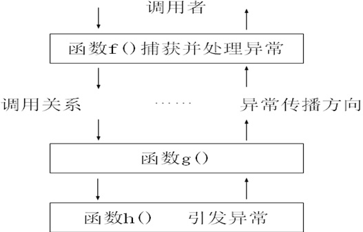

异常处理的概念：
在编写应用软件时，不仅要保证软件的正确性，还应该具有容错能力。在设计软件时，要充分考虑到各种意外情况，并给予适当的处理，要力争做到允许用户排除环境错误，继续运行程序，这就是异常处理。
异常处理的基本思想：
在大型软件中，由于函数之间有着明确的分工和复杂的调用关系，发现错误的函数往往不具备处理错误的能力。这时它可以引发一个异常，希望它的调用者能够捕获这个异常并处理这个错误。如果调用者也不能处理这个错误，还可以继续传递给上级调用者去处理，这种传播会一直继续到异常被处理为止。如果程序始终没有处理这个异常，最终它会被传到C++运行系统那里，运行库函数terminate将被自动调用，其缺省的功能是调用abort终止程序。如下图所示。
单继承

C++的异常处理机制使得异常的引发和处理不必在同一个函数中，底层的函数可以专注于解决具体问题，不必过多地考虑对异常的处理。上层调用者可以在适当的位置设计对不同类型异常的处理。